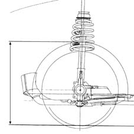
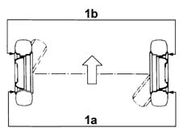
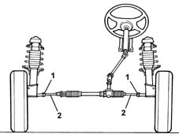
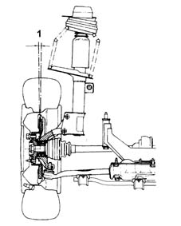
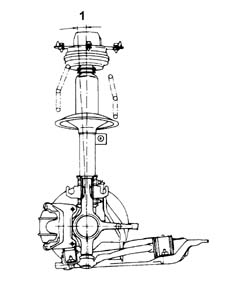

4450A10 front wheel geometry - check using optical equipment - includes front wheel tow-in adjustment if necessary
- Path
- Procedures > 44 SUSPENSION AND WHEELS > 4450 WHEELS AND HUBS > 4450A wheel geometry > 4450A10 front wheel geometry - check using optical equipment - includes front wheel tow-in adjustment if necessary
- Kind
- repair procedure (removal / refitting; the operation number is the code)
- Applies to
- all engines; all production periods
- Interactive page
- https://sloeber94.github.io/elrnDB-lYpsln/en/#/2429253
Applies to: all engines; all production periods
The rear wheel geometry should be checked after having subjected the components which affect the wheel geometry to the following checks:
- tyre inflation pressure;
- the eccentricity and orthogonality of the wheel rims should not exceed 3 m;
- wheel bearings end float;
- clearance between steering knuckle and track control arm ball joint;
- steering rod ball joint clearance.
After having carried out the above checks, position the vehicle (in running order) on a lift equipped with the test equipment.
Applies to: all engines; all production periods
CHECKING WHEEL GEOMETRY
1. Check that the front wheel geometry is within the recommended limits. the geometry is measured by checking the distance from the ground at the front wing maximum curvature point.
The geometry values are supplied with standard A.
Standard A = unladen vehicle including spare wheel, tools, accessories and fluids (full fuel tank).
 | Measurement | Value | |
|---|---|---|---|
- | Standard A (mm) | 639 ± 5 |

Applies to: all engines; all production periods
CHECK ON TOE-IN
1. Check that the front wheel toe in is within the recommended limits.
The toe in values are supplied with standard A.
Standard A = unladen vehicle including spare wheel, tools, accessories and fluids (full fuel tank).
| Measurement | Value | |
|---|---|---|---|
- | 1a - 1b, Standard A (mm) | 0 ± 1 |

Applies to: all engines; all production periods
If the front wheel toe-in is not correct, adjust it as described below.
TOE IN ADJUSTMENT
Straighten the steering wheel perfectly, and lock it in this position with a suitable tool.
Loosen the bands fastening the steering box boots to the steering rods.
1. Loosen the rod lock nuts.
2. Tighten or loosen the steering box rods until the toe in value is correct, keeping the front wheels aligned.
Tighten the steering rod lock nuts to the specified torque.
 | Fastening | Component | Ø | Value (daNm) |
|---|---|---|---|---|
- | Nut | ADJUSTABLE STEERING LINKS | M12 | (Steering box side) 3.1 ÷ 3.7 |
Tighten the bands fastening the steering box boots to the steering rods.
Remove the tool used for locking the steering wheel.

Applies to: all engines; all production periods
CHECK ON CAMBER
1. Check that the front wheel camber is within the recommended limits.
The camber values are supplied with standard A.
Standard A = unladen vehicle including spare wheel, tools, accessories and fluids (full fuel tank).
| Measurement | Value | |
|---|---|---|---|
1 | Standard A (-) | 27' ± 20' |

Applies to: all engines; all production periods
CHECK ON CASTER
1. Check that the front wheel caster is within the recommended limits.
The caster values are supplied with standard A.
Standard A = unladen vehicle including spare wheel, tools, accessories and fluids (full fuel tank).
| Measurement | Value | |
|---|---|---|---|
1 | Standard A (-) | 2°29' ± 20' |
